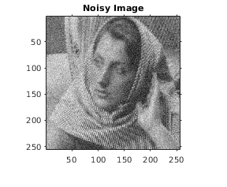
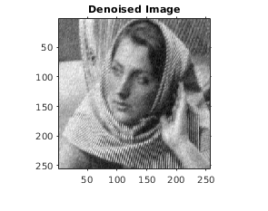
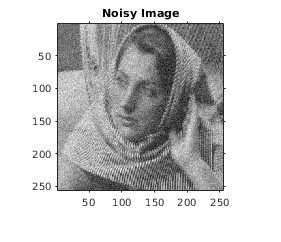
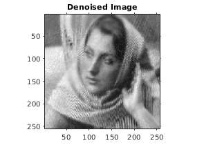
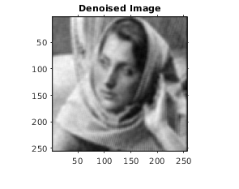
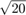
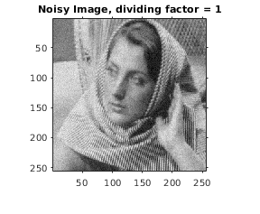
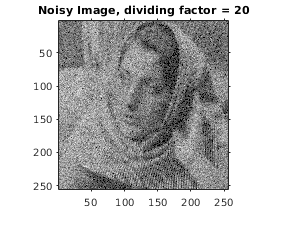

Assignment 5 : Question 5
Contents
Part (a)
Final denoised image and corresponding RMSE value is reported below.
tic; disp('PCA denoising with global eigenspace'); myPCADenoising1('../data/barbara256.png'); toc; snapnow;
PCA denoising with global eigenspace RMSE = 0.072107 Elapsed time is 0.822105 seconds. 
Part (b)
Final denoised image and corresponding RMSE value is reported below.
tic; disp('PCA denoising with local eigenspace'); myPCADenoising2('../data/barbara256.png'); toc; snapnow;
PCA denoising with local eigenspace RMSE = 0.097038 Elapsed time is 129.157056 seconds. 
Part (c)
The main difference between the PCA based approach and bilateral filtering is that PCA denoising removes noise by discarding the 'noisy' dimensions, whereas bilateral filtering does so by smoothing the intensity values. Further, PCA denoising isn't affected by the spatial distance between pixels/patches, whereas bilateral filtering is affected by distance.
Final denoised image and corresponding RMSE value is reported below.
tic; disp('Denoising using bilateral filtering'); myBilateralFiltering('../data/barbara256.png', 7, 20); toc; snapnow;
Denoising using bilateral filtering RMSE = 0.15398 Elapsed time is 34.749642 seconds.
Part (d)
Final denoised images and corresponding RMSE values are reported below, for both dividing factors.
The result for the case when the dividing factor is 1 is much better as compared to that when the factor is 20. This is because the assumed approximation (Anscombe Transform for Poisson Noise) is accurate when the mean tends to infinity. Thus, by dividing the original image by 20, we are decreasing the mean value of each pixel by  and hence the validity of our assumption decreases, leading to a poorer result.
tic; disp('PCA denoising with local eigenspace, poisson noise, factor = 1'); myPCADenoising2_poisson('../data/barbara256.png', 1); toc; snapnow; tic; disp('PCA denoising with local eigenspace, poisson noise, factor = 20'); myPCADenoising2_poisson('../data/barbara256.png', 20); toc; snapnow;
PCA denoising with local eigenspace, poisson noise, factor = 1 RMSE = 0.078178 Elapsed time is 129.231955 seconds.
PCA denoising with local eigenspace, poisson noise, factor = 20 RMSE = 0.95288 Elapsed time is 135.118443 seconds.